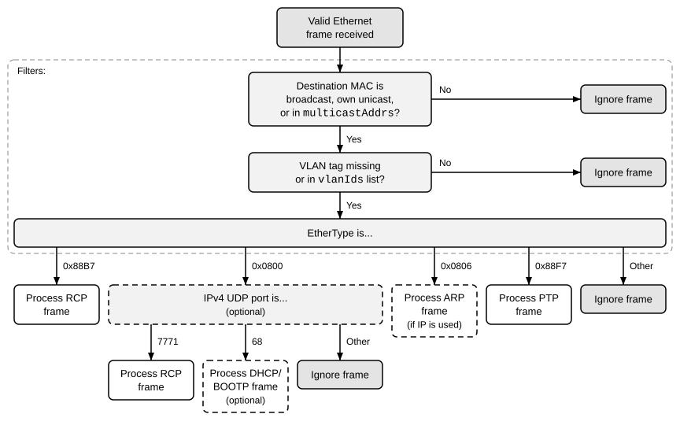
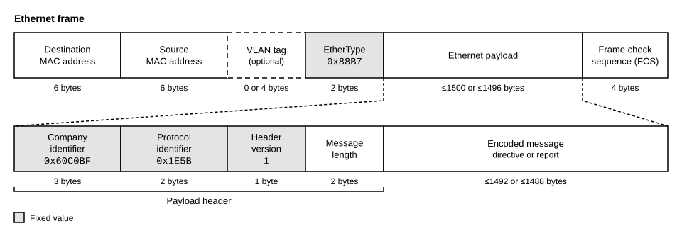
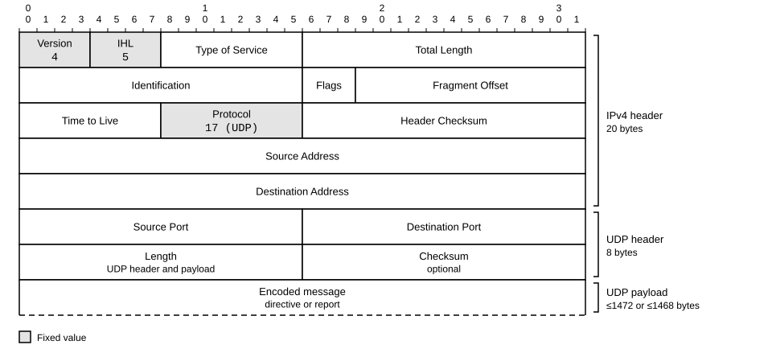

Network
An RCP server accepts RCP messages carried over raw Ethernet frames (layer 2 of the OSI model). A server that supports IP can also accept RCP messages carried over User Datagram Protocol (UDP) packets (layer 4).
Note
Raw Ethernet needs no IP configuration, but its frames do not pass routers. UDP/IP packets can be routed.
The figure shows how a server processes and filters the frames that it receives. Dashed boxes mark optional or conditional support. ARP is required if the server uses IP.

Message size
The figures in the sections Raw Ethernet and UDP/IP give the maximum size of the complete encoded directive or report, without and with a VLAN tag.
Fragmentation is optional. A server may reassemble fragmented IPv4 packets (RFC 791), which allows UDP messages that are larger than a frame. A server without fragmentation support ignores fragmented packets without notifying the client. Raw Ethernet has no fragmentation. A client should keep both its directives and the expected reports within one frame unless it knows that the server supports larger messages.
Raw Ethernet
A raw Ethernet frame that carries an RCP message is structured as defined in IEEE 802.3. The upper part of the figure shows the frame, and the lower part shows its payload. The figure applies to directives and reports.

The VLAN tag is defined in IEEE 802.1Q. The EtherType is the OUI Extended EtherType. The frame check sequence is the 32-bit cyclic redundancy check (CRC) value of the frame.
The server accepts the following destination MAC addresses:
The broadcast address FF:FF:FF:FF:FF:FF. All servers on the Ethernet network accept it, regardless of their configuration.
The individual address of the server. By default, it is the factory-default address (
rcp.info.fldIdentity.macAddr), andrcp.net.fldConfig.macAddrreplaces it.The multicast addresses of the server (
rcp.net.fldConfig.multicastAddrs).
The fields of the payload header are transmitted with the most significant byte first. The company identifier is the organizationally unique identifier (OUI) of onsemi. The message length counts only the encoded message, excluding the eight-byte payload header and any Ethernet padding. The header version is independent of the version of the protocol that the server reports in rcp.info.fldIdentity.rcpVersion. The server ignores any bytes after the encoded message. It ignores a frame whose message length is 0 or exceeds the bytes available after the payload header. The server handles a message that it cannot decode as described in Messages.
The reply to a directive uses the same frame format. Its destination address is the source address of the received frame, and it uses the VLAN of the received frame. Its source address is the individual MAC address of the server, even if the received frame was addressed to a broadcast or multicast address.
UDP/IP
A server that supports IP also accepts RCP messages in UDP packets (RFC 768) that are carried in IPv4 packets (RFC 791). If rcp.net.fldConfig.ipAddr is 255.255.255.255, the IP networking stack, including UDP, is disabled and the server accepts raw Ethernet frames only.
The IPv4 header has no options. The UDP payload is the encoded message without payload header.

A client sends a directive to the UDP port 7771 (0x1E5B) of the server. The server sends its reports from the UDP port 7771 to the UDP source port that the client used.
The server accepts the following destination IP addresses:
The limited broadcast address 255.255.255.255, as long as IP networking is enabled.
The broadcast address of the local subnet. It has all bits after the network prefix set to one. The length of the network prefix is
rcp.net.fldConfig.subnetPrefixLength.The unicast IP address of the server (
rcp.net.fldConfig.ipAddr).The multicast addresses of the server (
rcp.net.fldConfig.multicastAddrs).
Clients
The server assigns a unique client ID to each client that it learns from received messages or that is registered in advance. The page Network Configuration describes how the server identifies and registers clients.
Support protocols
A server that uses IP answers requests of the Address Resolution Protocol (ARP, RFC 826) for its IP address, so that a client can find its MAC address. If rcp.net.fldConfig.gratuitousArpEnable is set, the server also announces its address after every successful change of the IP address.
The server can acquire its IP address with the Dynamic Host Configuration Protocol (DHCP, RFC 2131) or the Bootstrap Protocol (BOOTP, RFC 951) if rcp.net.fldConfig.ipAddr is 0.0.0.0. Both are optional.